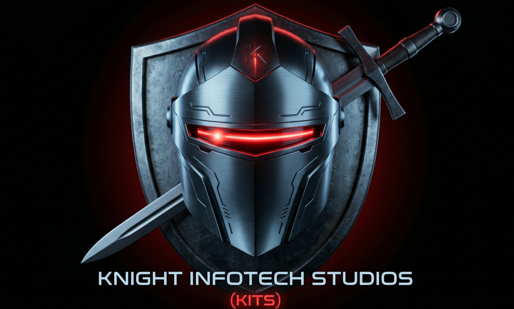

30+ Years of Michael Knight's Enterprise Expertise.
Built for Engineers, by a Veteran Engineer.
"During a recent engagement, a large-scale organization was operating with near-zero documentation across their infrastructure estates. They relied on tribal knowledge and manual lists that were years out of date."
I deployed and customized my suite for their specific environment. By the end of the engagement, they had full visibility and automated documentation, including a fully implemented certificate management system. They transitioned from guessing to being true wardens of their estate.
Actionable data across the three critical pillars of infrastructure management:
$99.95 First 500 Intro Offer
Get Early AccessReal info. Actionable info. View the output from our production-hardened engine:
Fleet Dashboard
View Live Demo
DHCP Server Deep Report
View Live Demo
Hyper-V Deep Report
View Live Demo
"I’m a CLI junkie for doing, but a GUI enthusiast for seeing."
Michael Knight has spent three decades as an Infrastructure Consultant and Architect. The C0nt1nu1ty Suite is the result of 30 years of "sharpening the saw"—combining the raw power of PowerShell automation with the elegant reporting required for modern enterprise visibility.
The Tech Stack: